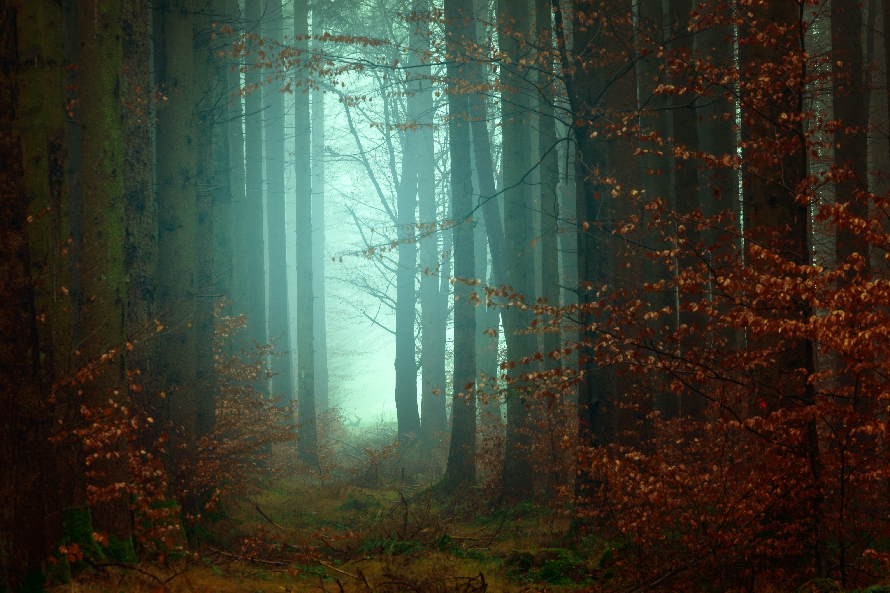

Wood Forest
Wood forest is an area of land dominated by trees. Hundreds of definitions of forest are used throughout the world, incorporating factors such as tree density, tree height, land use, legal standing, and ecological function.
Frozen Land
Frozen land, the southernmost continent and site of the South Pole, is a virtually uninhabited, ice-covered landmass. Most cruises to the continent visit the Antarctic Peninsula, which stretches toward South America.

Dragon Hill
Dragon hill is a landform that extends above the surrounding terrain. It often has a distinct summit, and is usually applied to peaks which are above elevation compared to the relative landmass, though not as prominent as mountains.